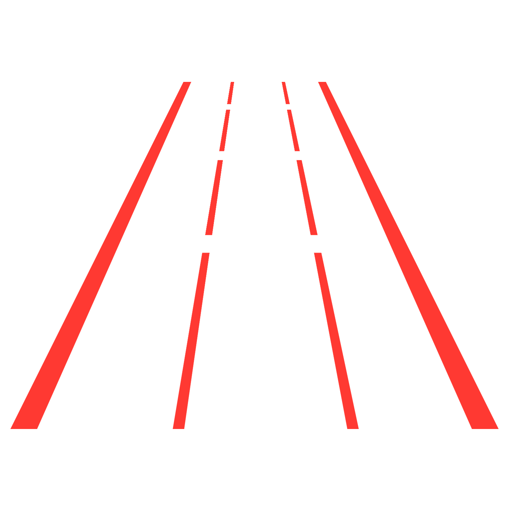
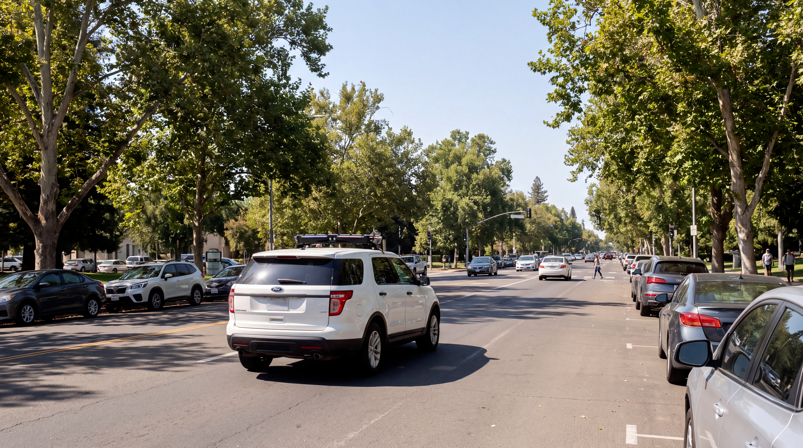
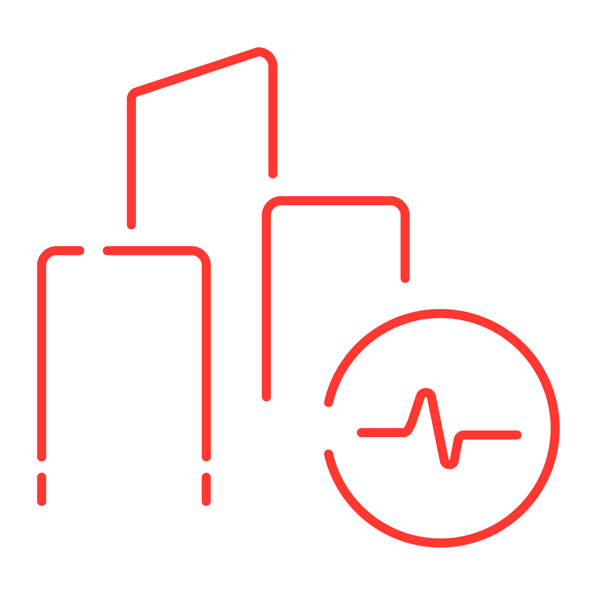
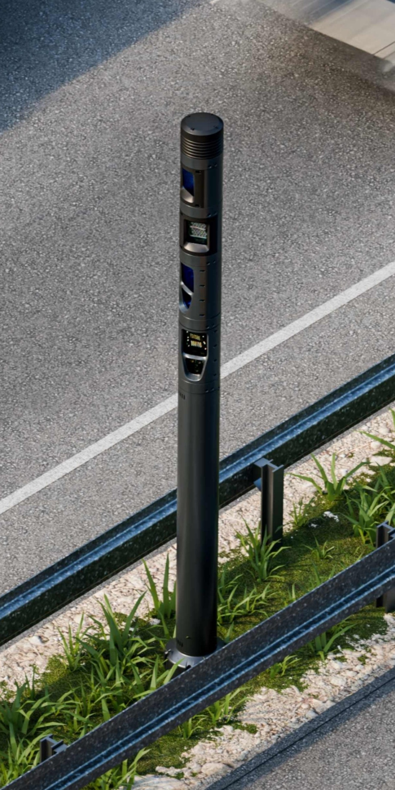
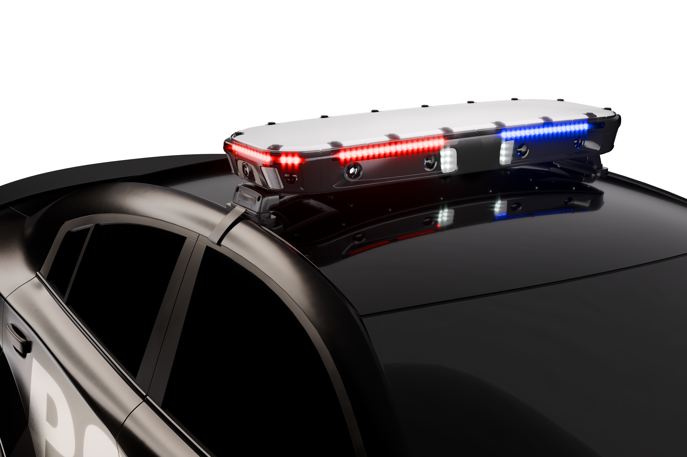
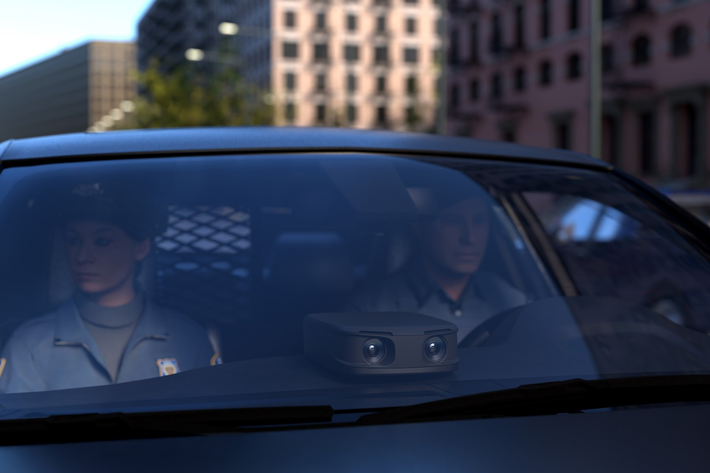
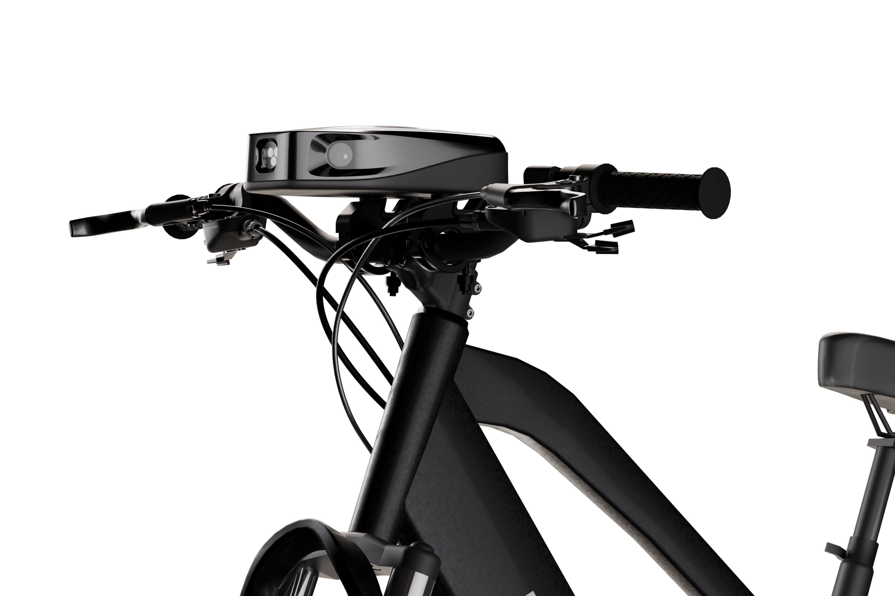

Road safetyEkin Smart City Technology keeps your municipality safe, and keeps you informed.
Real-time intelligence for mobility, road safety and daily city operations.

A live picture of pavement, markings and sidewalk condition.

Road safety
City health checkDevices, alerts and evidence in one place through Maestro OS.

A modular smart city platform delivering traffic insights, environmental intelligence and connected urban operations.
Explore product
A vehicle mounted intelligence system supporting real time awareness, safer mobility and informed field operations.
Explore productA portable rapid deployment solution providing flexible traffic intelligence wherever operational support is needed.
Explore product
A fixed and mobile edge intelligence solution delivering real time traffic insights across multiple lanes.
Explore product
A compact Full Edge AI solution bringing advanced intelligence and real time connectivity to agile urban mobility.
Explore productA unified command platform transforming connected data into actionable insights and coordinated operations.
Explore productA modular smart city platform delivering traffic insights, environmental intelligence and connected urban operations.
02A vehicle mounted intelligence system supporting real time awareness, safer mobility and informed field operations.
03A portable rapid deployment solution providing flexible traffic intelligence wherever operational support is needed.
04A fixed and mobile edge intelligence solution delivering real time traffic insights across multiple lanes.
05A compact Full Edge AI solution bringing advanced intelligence and real time connectivity to agile urban mobility.
A unified command platform transforming connected data into actionable insights and coordinated operations.
Explore how Ekin brings together real-time data, traffic intelligence, environmental insights, and operational visibility to support safer, smarter, and more efficient cities.
Book a Demo →
We are proud to be a leading city in innovation and technology. This smart pole with safety cameras, public Wi-Fi, traffic and environmental sensors will assist emergency management in creating a safer community for residents, business owners, and visitors.
Book a demo and watch Ekin's accuracy in action across mobility, traffic and city safety.